Beyond mathematics
Music
My personal top 100 favorite albums, loosely ordered, one album per artist, followed by top tens for particular years, decades, and genres.
Select any chart to read it at full size.
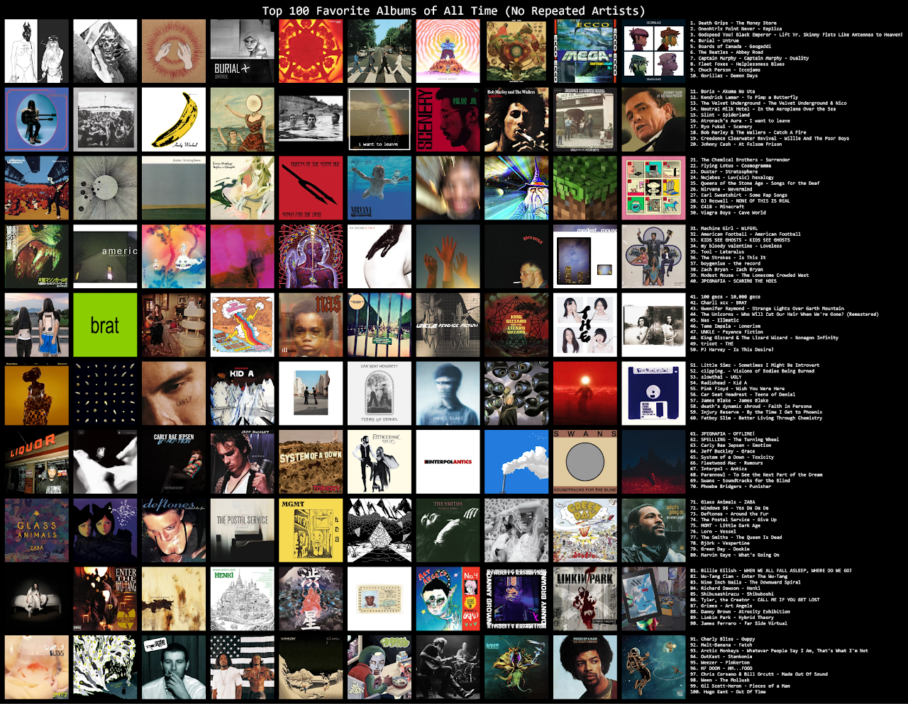
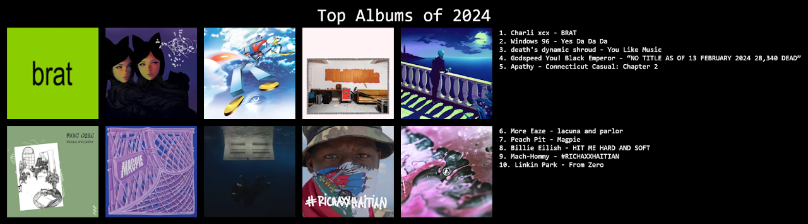
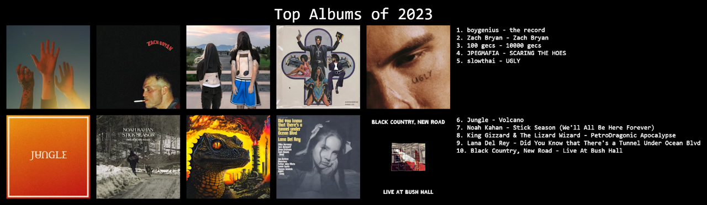
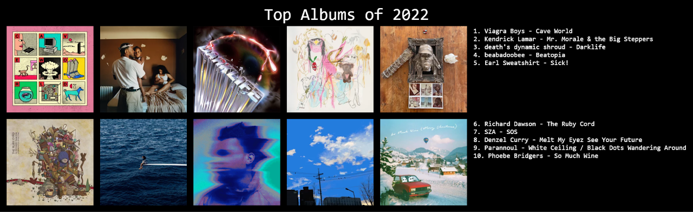
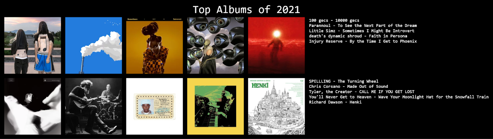
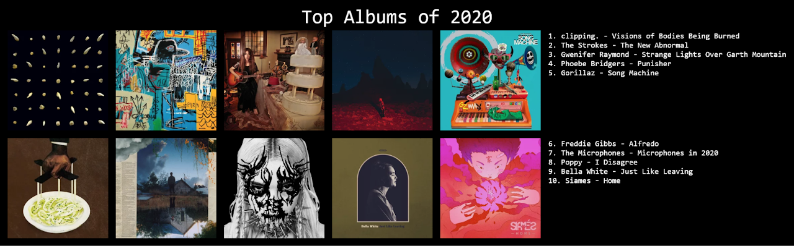
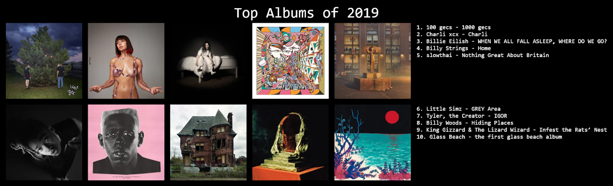
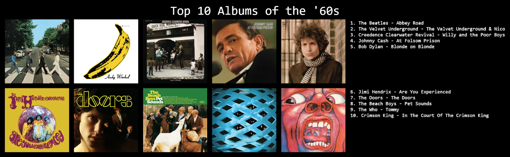
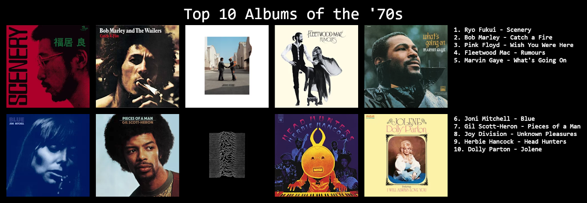
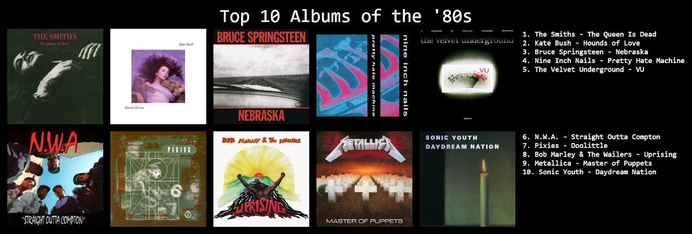
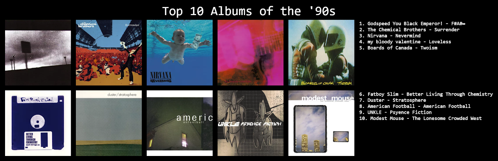
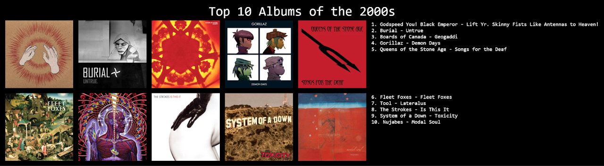
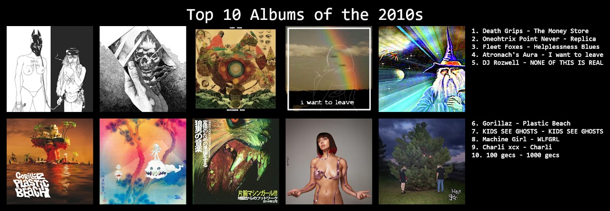
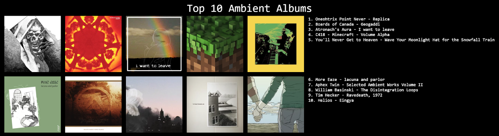
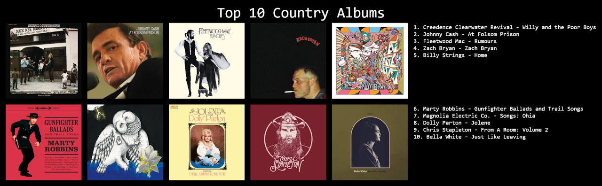
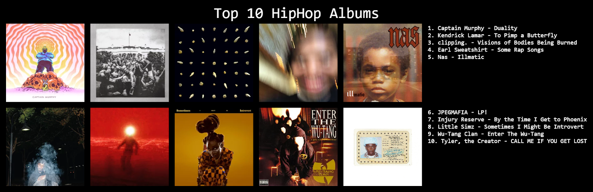
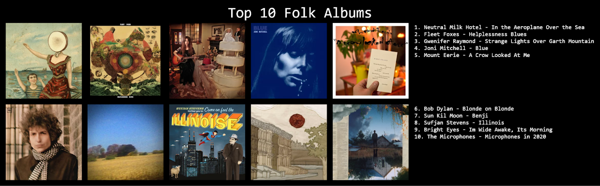
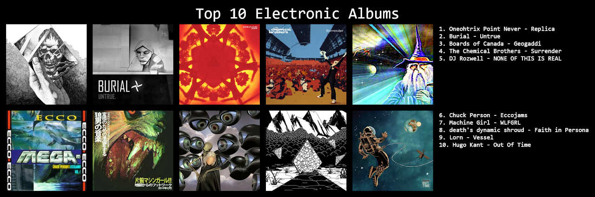
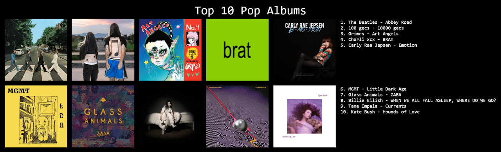
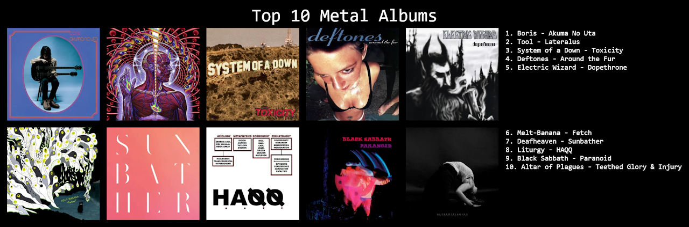